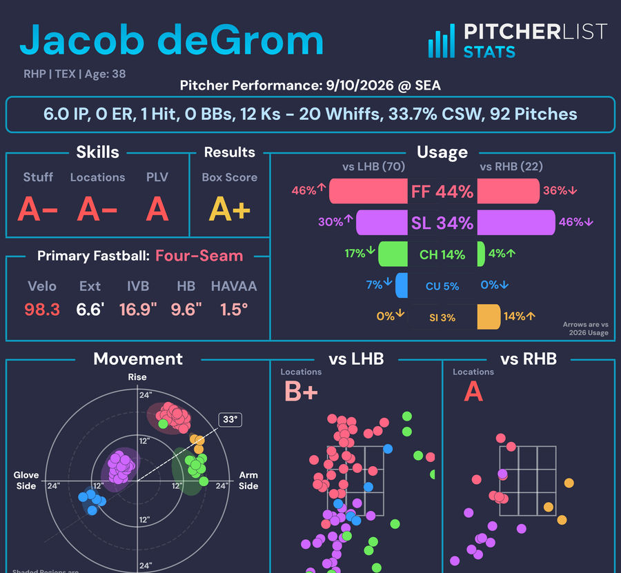
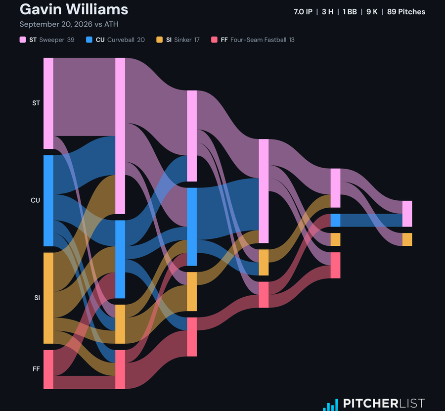
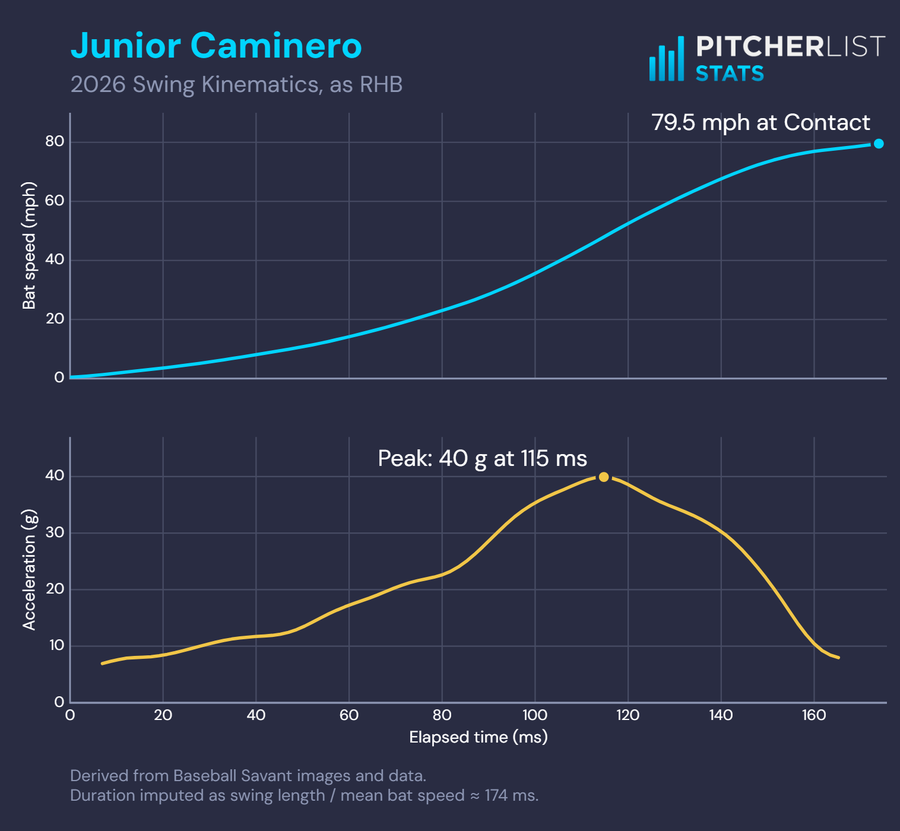
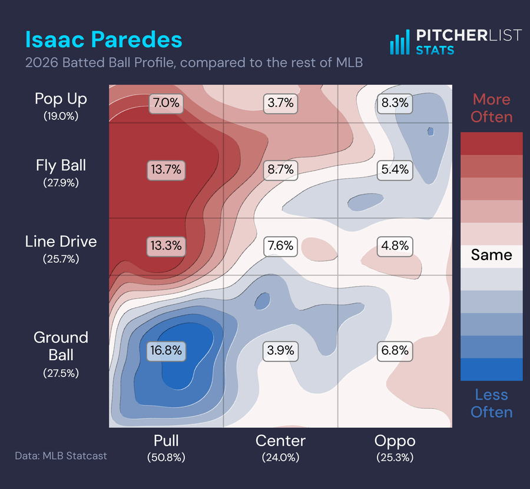
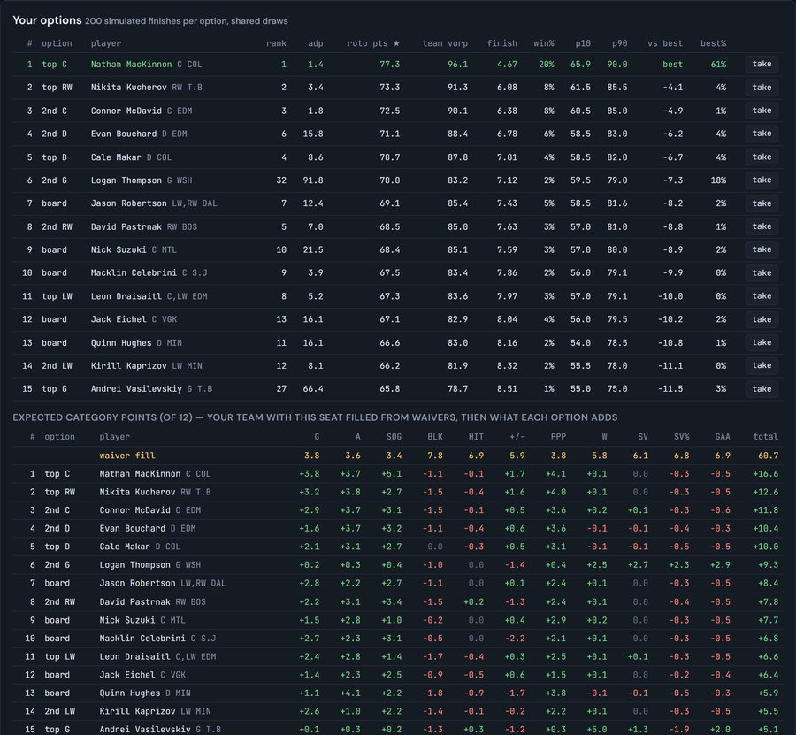

PLV Pitcher Game Cards
A Pitcher List Stats card for every pitcher in every MLB game: Stuff, Location and PLV model grades, with movement, locations, and usage.
bland·a·lyt·ics | noun
: the method of assigning numbers to things, then visualizing them

A Pitcher List Stats card for every pitcher in every MLB game: Stuff, Location and PLV model grades, with movement, locations, and usage.

A pitcher's start as a Sankey: every plate appearance's pitch-by-pitch path, by pitch number and type.

Bat Speed, Acceleration, and Jerk through an MLB hitter's swing, derived from their Baseball Savant swing-path card.

Where a hitter's batted balls go — spray angle against launch angle — compared to the rest of MLB, or to their own prior season.

Sit in one seat of a roto snake draft. Every option is priced by simulating the rest of the draft — roto points, category by category. Runs in your browser.